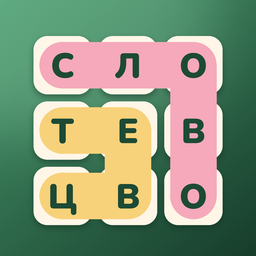

Политика конфиденциальности
Приложение «Словоцвет» · действует с 29 сентября 2026 года
Коротко
«Словоцвет» не собирает, не хранит на серверах и не передаёт третьим лицам никаких персональных данных. В приложении нет регистрации, рекламы, аналитики и сторонних сервисов, и оно работает без интернета.
Что хранится на устройстве
Прогресс в игре, лепестки, найденные слова и настройки сохраняются только на вашем устройстве. Разработчик к ним доступа не имеет.
Уведомления
Если вы включите напоминание о задании дня, приложение само запланирует локальное уведомление на устройстве. Ничего не отправляется в сеть.
Удаление данных
Прогресс можно сбросить в настройках приложения. При удалении приложения все его данные удаляются с устройства.
Дети
Приложение не собирает данные ни у каких пользователей, включая детей.
Изменения
Если политика изменится, новая версия появится на этой странице.
Контакты
Разработчик — Никита Ревин, nik007rev@gmail.com.